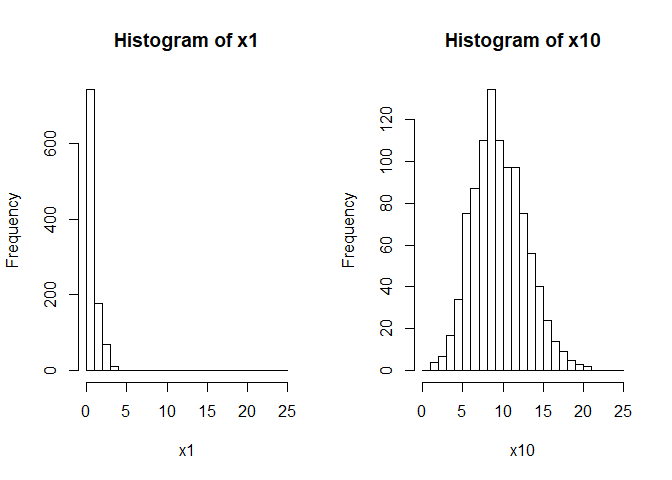

Generalized Linear Models: understanding the link function
Generalized Linear Models (‘GLMs’) are one of the most useful modern statistical tools, because they can be applied to many different types of data. Count, binary ‘yes/no’, and waiting time data are just some of the types of data that can be handled with GLMs.
We often call such data ‘non-normal’ because its distribution doesn’t follow a normal distribution (also known as the bell curve or Gaussian Distribution).
In this post I will look at how GLMs use a ‘link function’ to model non-normal data. I think there is a sort of beautiful elegance in the maths of how the link function works. Understanding this theory will also help you build better models for your data and interpret them in more nuanced ways.
We will step through the math behind the GLM and build it up from scratch.
GLMs extend ‘General Linear Models’ (confusing names I know), read this post first if you are not yet familiar with General Linear Models.
Thanks is due to Brad Biggerstaff for emailing some errors in terminology in my original post (which I’ve updated and hopefully fixed 19/10/2018).
Choosing the right distribution for your data
I learned about the Normal distribution in primary school. The normal distribution is central to much of statistics (no pun intended), but there are many types of data that don’t meet the basic assumptions of the normal.
The normal distribution has ‘infinite support’, which means values modelled by the normal can take any negative or positive number. Often the normal is a pretty reasonable approximation of data that doesn’t meet these assumptions, but there are many cases when using a normal for data that isn’t will lead us to make errors in our inferences.
Statisticians have invented whole families of distributions to describe any type of data you can imagine, from the morbid (the Exponential distribution for deaths or decay), to wealth inequality (the Pareto distribution) and even days of the year (the Von Mises distribution).
More specifically, we should think of the distribution as a description of the process that generates the data.
Let’s start with something simple. Let’s assume you have been counting fish on coral reefs. So your data are count data.
If the counts are large they may well look pretty normal. But there are some important differences.
Counts are integers, whereas the normal distribution is for continuous data that can include any fraction.
Counts also can’t be less than zero, but the Normal distribution model’s stochastic processes that draw zeros and negative numbers.
Statisticians have invented many distributions for counts, one of the simplest is the Poisson distribution. It is a model of positive integers. It has one parameter λ, which is both its mean and variance.
Let’s see what that looks like with some simple R code to draw random numbers from two Poisson distributions:
n <- 1000
set.seed(42)
x1 <- rpois(n, lambda = 1)
x10 <- rpois(n, lambda = 10)
mean(x1)
## [1] 0.976
var(x1)
## [1] 0.9663904
mean(x10)
## [1] 10.083
var(x10)
## [1] 10.75086We just sampled random numbers from two Poisson distributions with means of 1 and 10. Notice that the means and variances of each are approximately equal (not exactly equal because of we drew a small random sample).
You can think of this sampling from the Poisson as a model of count data. Let’s see what that looks like:
par(mfrow=c(1,2))
hist(x1, xlim = c(0, 25), seq(0, 25, by = 1))
hist(x10, xlim = c(0, 25), seq(0, 25, by = 1))
So the data drawn from the poisson with lambda = 1 are concentrated near zero and strongly skewed (not very Normal). The data with lambda = 10 are approximately normally distribution and have a much larger variance than the former data.
Linear models
So far our Poisson model only has one parameter, a mean (and variance). But what if we wanted the mean to change?
For instance, we might have counted fish on different types of coral reefs and we want to test whether there are difference abundances on each type of reef.
Or we might have counted fish across a gradient of pollution and we want to know how their numbers change from low to high pollution.
I will call these hypothesized causes of changes in fish counts ‘covariates’. Others might call them explanatory variables, treatments (if experiments) or predictor variables.
We are using Generalized Linear Models, so we could include the covariates as variables in a simple linear equation, after all that is what we do with linear regression (and general linear models):
Let’s generate some such data ourselves. We will assume pollution is measured on a zero to one (low to high) scale, that the mean number of fish with no pollution =4 and that on average there are no fish anymore when pollution levels = 0.5 (half their maximum).
The plot below illustrates our model for the mean expected number of fish across the pollution gradient. In this case we are building a model to simulate some data to practice with:
n <- 50
beta <- -8 #effect of polluted reefs
alpha <- 4 #intercept = mean at 'zero' pollution
x <- seq(0, 1, length.out = n) #pollution levels
ymean <- alpha + beta*x
plot(x, ymean, type = 'l', xlab = "Pollution level", ylab = "Number of fish counted")
abline(h = 0, lty = 2, lwd = 2) There is something odd about this model: we are predicting negative fish (on average) for pollution levels over 0.5.
It gets even worse if we model sampling with a normal distribution:
set.seed(55)
yobs_normal <- ymean + rnorm(n)
plot(x, ymean, type = 'l', xlab = "Pollution level", ylab = "Number of fish counted")
points(x, yobs_normal)
abline(h = 0, lty = 2, lwd = 2)
Clearly if we went in the real world to sample data, we wouldn’t ever get any negative counts.
So we are going to have to redesign our model, which is the basis of our statistical tests, so that negative values don’t happen.
But we still want to use a linear model, because they are convenient to work with mathematically and convenient when it comes to estimating the unknown effects.
Simulating Poisson data from a linear model
So now we come to link functions. Link functions elegantly solve the problem of using linear models with with non-normal data. There are many types of link functions, but we will look at one that is popular for use with count data.
If you wanted to stop a linear function from taking negative values what is one simple transformation you could make?
Well, you could take the function’s exponent. We will redo the above linear equation as log-linear. I will change the parameter names to reflect that they are now logs:
gamma <- -3.2 #effect of polluted reefs
alpha <- 4 #intercept = mean at 'zero' pollution
yexp <- alpha*exp(gamma*x)
plot(x, yexp, type = 'l', xlab = "Pollution level", ylab = "Number of fish counted")
abline(h = 0, lty = 2, lwd = 2)Here we have the equation y = alpha *exp(gamma*x) which is the same as the linear equation for log(y): log(y) = log(alpha) +gamma*x. Note I have retained alpha=4 in both, because for both equations alpha is the expected value at pollution of zero.
I changed the slope parameter in the log-linear equation to gamma because it is not a direct analogue of our slope parameter beta above.
One of the nice things about the log-linear equation is that the slope parameter now represents multiples of change. For instance, gamma = -3.2 means the abundance declines about 25 times decline (=1/exp(-3.2)) when going from a pollution level of 0 to 1.
Abundance declines about a five times decline if we go from a pollution of 0 to 0.5 (= 1/exp(-3.2*0.5)). Noting this will be important when we come to interpreting fitted models below.
We could now use this exponential curve as the mean (and variance!) of a Poisson:
yobs_pois <- rpois(n, yexp)
plot(x, yexp, type = 'l', xlab = "Pollution level",
ylab = "Number of fish counted",
ylim = c(0, 8))
points(x, yobs_pois)Notice that no data fall below zero now. Also, notice how the variance of the samples gets smaller as the mean gets smaller.
The beauty of the link: combining linear models with bespoke distributions
In the real world, you will have the sample points, but not the ‘true’ mean. In the example above we just made up the true mean ourselves. In the real world Nature provides the ‘truth’ about how pollution impacts fish abundance and the best we can do is take as many measurements as we can and hope to get near the truth.
To estimate the effect of the pollution covariate you can use R’s glm() function:
m1 <- glm(yobs_pois ~ x, family = poisson(link = "log"))
coef(m1)
## (Intercept) x
## 1.409704 -3.345646The values we printed give the estimates for the intercept and slope coeffcients (alpha and gamma). You can check that these are similar to the true estimates we provided by comparing them to log(alpha) and gamma.
I have specified above the type of distribution to use (family = poission()) and which link to use. "log" is in fact the default choice, but I put it there so you know you can change it.
For instance, you can use "identity" link for data that is far from zero. If you use the identity link, which is basically no link function, your model will be linear, not log-linear, so your slope estimate will once again be additive.
Technically we would say we fitted a Poisson Generalized Linear Model with a log link function. So the model’s predictions for the data will be Poisson distributed about its estimate for the mean. Note that the data can contain zeros, but the mean of the Poisson is always >0.
So what do the coefficients mean? Remember the coefficients are on the log scale. So the mean abundance at a pollution level of zero = {r} exp(coef(m1)[1]) and a change in pollution from 0 to 1 causes an estimated {r} 1/exp(coef(m1)[2]) times decline in fish abundance.
Let’s also plot the fitted model with standard errors.
ypredict <- predict(m1, type = "response", se = TRUE)
plot(x, yexp, type = 'l', xlab = "Pollution level",
ylab = "Number of fish counted",
ylim = c(0, 8))
lines(x, ypredict$fit, lwd = 2, col = "red", lty = 2)
#Add lines for standard errors
lines(x, ypredict$fit + ypredict$se.fit, lty = 3, col = "red")
lines(x, ypredict$fit - ypredict$se.fit, lty = 3, col = "red")
#plot observations
points(x, yobs_pois)
legend('topright', legend = c("True mean", "Estimated mean"),
lwd = 2, lty = c(1,2), col = c("black", "red"))
You can see the fitted line falls close to the ‘true’ line, and the standard errors are pretty tight around our best estimate.
The fitting algorithm itself is attempting the maximise the log-likelihood of the observations given the mean (in technical speak). You can read more about likelihoods here.
It is also worth noting that we still need to do assumption checks, like we would for a regression with normal errors. For instance, we can check the model’s residuals (the difference between the data and the model’s predicted values) to see that the residual variance approximately equals the mean. A cool way to check assumptions of the Poisson model is to use ‘rootograms’, look it up.
The beauty of the link: combining linear models with bespoke distributions to describe natural processes
So in my introduction I claimed that maths of GLMs is beautiful. I think that because the maths is nicely coherent with the way nature often works.
We wanted to fit a linear function to data that can’t be less than zero, because linear functions are convenient to work with. So we used a log link function to describe the mean and to ensure that the mean is always greater than zero.
We ended up with a model where the slope describes multiples of change in fish abundance over the pollution gradient. So the model itself is actually multiplicative, not additive.
If you think about it, natural processes that generate counts often are multiplicative, not additive. For instance, we may talk about ‘fish multiplying’ when they breed, because population growth can be exponential.
So our mathematically convenient link function actually ended up being a better description of the natural process.
The effort to use a non-negative model also forced us to think about using a more appropriate distribution for the data: the Poisson rather than the Normal. The Poisson has the variance increasing with the mean.
Once again, natural processes that generate counts often lead to increases in the variance in situations where we count more. Counts near zero will naturally have low variance, because they are constrained by zero, whereas higher counts will naturally have a greater variabilty.
You can also relax the assumption of mean = variance with other GLM distributions like the negative binomial.
It turns out that proper models of variance are crucial for getting the standard-errors right, and so crucial for detecting real effects over spurious ones.
Imagine if you used a Normal distribution and assumed equal variances. You might spuriously attribute differences between groups from high counts to some covariate, but the difference is actually just natural variation. Conversely, you might miss differences between groups with low counts, because a smaller difference at low counts should actually be statistically significant.
The increased power we get to detect differences at low counts with a GLM over a regression happens because it is the multiple of the difference that matters with the log link, not the absolute (additive) difference.
My final point is to remember that coefficients from a model with a log link (and some other links too, like the logit) are multiplicative. This can be very useful when it comes to making sense of your results and may change the way you present your findings.
For instance, we used this key insight from a GLM to make a case that pollution from logging causes a 24 times decline in the abundance of a threatened fish species.
Before we considered using the GLM, we had actually presented the results in terms of a % change in fish abundance. But % are not as easy to generalize, because they depend on your baseline. Multiples do not.
Hope you found this post helpful, and as always you can get me on Twitter if you have comments or questions.
Homework for the keen: What’s the difference between a log link and log transforming your data?
I wanted to add a brief appendix to address this question, because the answer is insightful as to how link functions work.
Try take the data we generated above and fit two GLMs (you will have to add a small number so you can log the zeros, not ideal but a common practice)
yobsplus <- yobs_pois+0.1
model1 <- glm(yobsplus ~ x, family = gaussian(link = "log"))
model2 <- glm(log(yobsplus) ~ x, family = gaussian(link = "identity"))In the first model we fitted a Gaussian (=Normal distributed errors) with a log link. In the second we fitted a Gaussian to log(y) with the identity link (which is no link).
Now compare the results. Notice that the estimate of the slope is quite different. Why is this?
The model with the log link is fitting the mean on the log scale, the Gaussian errors will be on the natural scale. So the residual (or error) variance will be constant for all mean values of y.
The model with the log of the data and identity link is fitting the mean and variance on the log scale. So if we retransform log(y) back to y, the variance will change with the mean.
So a log link isn’t the same as a log transformation. The transformation changes the raw data. The link function doesn’t touch the raw data, instead you can think of it as a transformation of the model for the mean of the raw data.